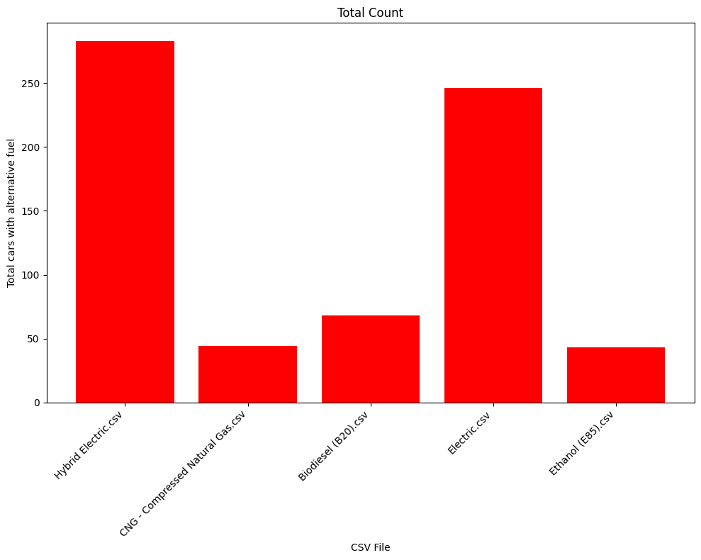

Data Sources
Here, we discuss the sources of our data, including websites, APIs, and raw data links.
API Used: News API
Website: https://newsapi.org/account
Core Endpoint: /data/endpoint
URL GET Example: hhttp://news.org/index7.php
Office of Energy efficiency and renewable energy
Dataset: The dataset comparing the range in miles for Gasoline Vehicles, Hybrid Cars, and All-Electric Vehicles serves several informative and analytical purposes. Here's an analysis of why this dataset might be used and its significance:
Why : This dataset allows for a direct comparison between different types of vehicles based on their driving range. This is particularly useful for consumers, manufacturers, and policymakers to understand the performance and efficiency of various vehicle technologies.
API Used: News API
Website: https://www.kaggle.com/code/saifuddinlokhand/audi-car-analysis/input
DatasetA dataset detailing the number of electric cars versus petrol (gasoline) cars manufactured by Audi serves multiple insightful purposes, reflecting both on the automotive industry's trends and Audi's strategic positioning within it. Here's a brief explanation of why such data might be gathered:
Why used By comparing the numbers of electric and petrol cars, stakeholders can gauge Audi's strategy and how it aligns with global trends towards electrification. This data can indicate Audi's readiness to compete in the growing EV market against other manufacturers.
Electric Vechile population data
Website: https://catalog.data.gov/dataset/electric-vehicle-population-data
DatasetThis dataset shows the Battery Electric Vehicles (BEVs) and Plug-in Hybrid Electric Vehicles (PHEVs) that are currently registered in United States.
Unlceaned Data and Cleaned
Below are visual representations of the raw and cleaned data to better understand the dataset's characteristics.

Raw Data
Cleaned Data
Data Visualization
Range Comparison Among Vehicle Types
This bar chart compares the minimum, median, and maximum range of gasoline vehicles, hybrid cars, and all-electric vehicles. Gasoline vehicles have a wide range of distances they can travel on a single tank, with the median notably lower than the maximum. Hybrid cars have a narrower range spectrum but still a significant difference between the minimum and median values. All-electric vehicles show a more significant disparity between minimum and median ranges, indicating variability in battery life and efficiency among different models.
Total Count of Alternative Fuel Vehicle Laws by CSV File
This bar chart indicates the number of laws related to different types of alternative fuel vehicles, categorized by the file name which likely corresponds to a database or a study. Hybrid and electric vehicles have the highest count, suggesting they are the most regulated or incentivized among alternative fuel options, with CNG (Compressed Natural Gas) and biodiesel following.
Number of Models Made by AUDI - Electric VS Petrol
This bar chart contrasts the number of petrol and electric models produced by Audi. The 'Dataset 1' bar, representing petrol models, shows a minimal number, while 'Dataset 2', representing electric models, shows a substantial number (10,668), indicating a significant shift towards electric vehicle production by Audi.
Comparison of Car Prices - Overall Market vs. Electric Vehicles
The box-and-whisker plot compares the distribution of car prices in the overall market with that of electric vehicles (BEVs - Battery Electric Vehicles) specifically. It indicates that electric vehicles tend to be priced higher on average compared to the general market, as seen by the position of the 'BEV average price' relative to the median of the overall market.
Total Electric Vehicle Sales by State Over Years

This line graph shows the total number of electric vehicles in different states over several years. The scale on the left is exponential, indicating the total number is quite large, and the lines for each state are relatively flat, suggesting that the number of electric vehicles has not changed dramatically over the years covered in the graph.
Hybrid-Electric, Plug-In Hybrid-Electric, and Electric Vehicle Sales
This bar chart shows the sales of hybrid-electric, plug-in hybrid-electric, and all-electric vehicles over two decades. It illustrates a growing trend in the sales of all three types of vehicles, with hybrid-electric sales leading, followed by plug-in hybrids, and a significant increase in all-electric vehicle sales in recent years.
Heatmap of Total Vehicles by Region and Period
This heatmap displays the total number of vehicles by region for two periods: 2017-2019 and 2020-2023. The 'Other' category has the highest numbers, greatly surpassing the Midwest and Northeast regions, with an increase observed in the later period.
Cumulative Total Vehicle Sales by Year
This area chart shows the cumulative sales of vehicles year over year. It indicates a steady increase in total vehicle sales, with a gradual slope that shows no significant spikes or drops, suggesting a consistent growth in vehicle purchases or registrations over the time period shown.
U.S. Vehicle Sales by Vehicle Type (January 2021 - May 2023)
This graph from Statista provides a comprehensive overview of U.S. vehicle sales from January 2021 through May 2023, segmented by vehicle type. It illustrates the sales volume of different types of vehicles, including petrol cars, electric vehicles, and hybrids, in thousands of units. The visualization shows trends over the specified period, indicating shifts in consumer preferences towards different vehicle types. The extensive coverage of various vehicle categories offers insights into the automotive market's dynamics and the growing significance of electric and hybrid vehicles amidst environmental concerns and technological advancements